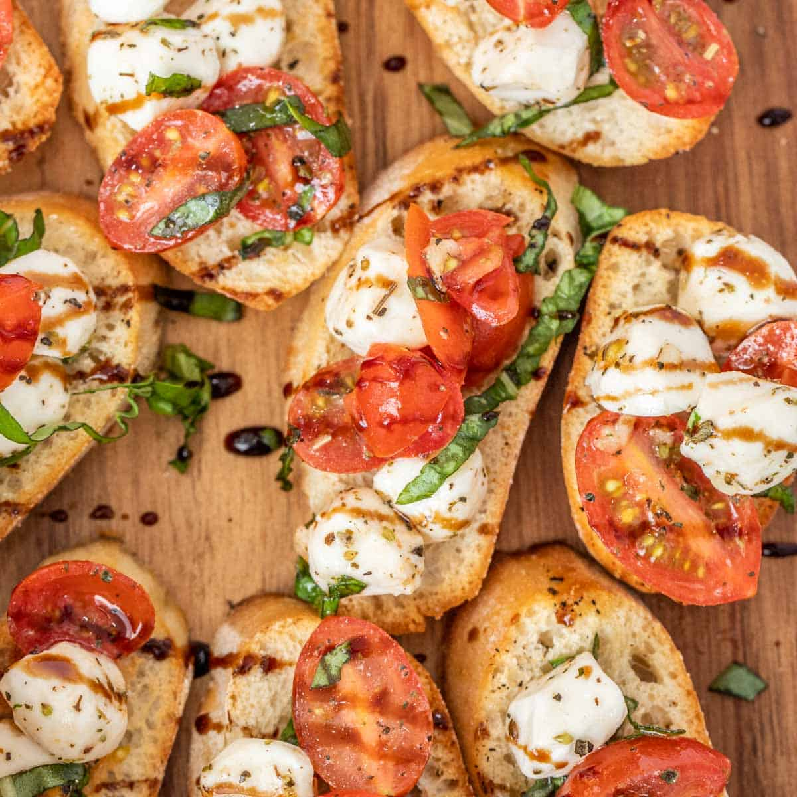

- Fresh baguette or ciabatta - 1 loaf, sliced into 1/2-inch slices
- Ripe tomatoes - 4 large, diced
- Fresh mozzarella - 8 ounces, diced
- Fresh basil - 1/4 cup, chopped
- Olive oil - 1/4 cup
- Balsamic vinegar - 1 tablespoon (optional)
- Salt - to taste
- Black pepper - to taste
- Garlic - 1 clove, peeled (for rubbing on the bread)
|
- Preheat the oven to 400°F (200°C). Arrange the bread slices on a baking sheet and brush them lightly with olive oil.
- Toast the bread in the oven for about 5-7 minutes, or until golden and crispy. Remove from the oven and let cool slightly.
- While the bread is toasting, prepare the topping: In a bowl, combine the diced tomatoes, fresh mozzarella, and chopped basil. Drizzle with olive oil and add salt and black pepper to taste. Optionally, add balsamic vinegar for extra flavor.
- Once the bread is slightly cooled, rub one side of each slice with the peeled garlic clove for a subtle garlic flavor.
- Top each toasted bread slice with a generous spoonful of the tomato and mozzarella mixture.
- Serve immediately, garnished with extra basil if desired.
|

|